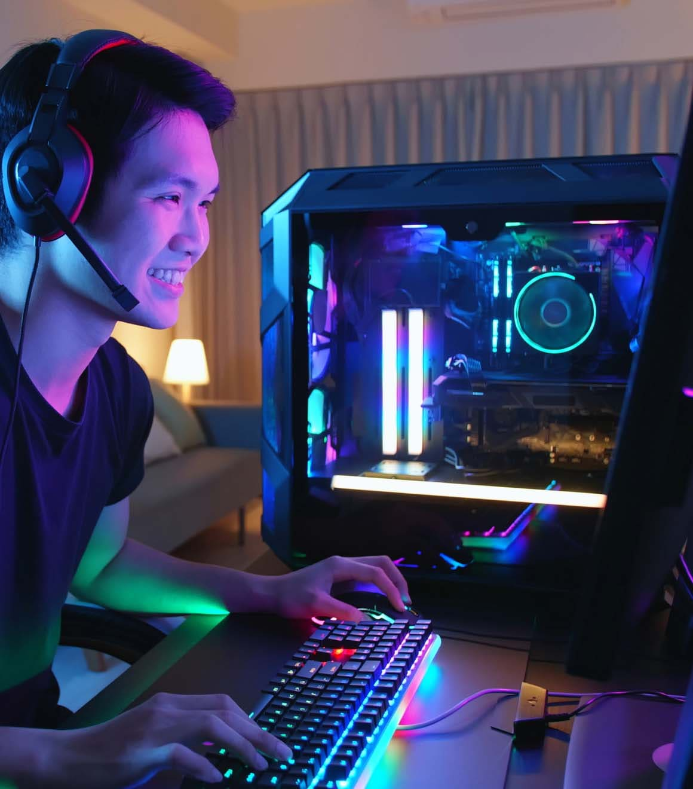

Saya adalah siswa di SMKN 9 jurusan Rekayasa Perangkat Lunak (RPL). Di sini,
saya belajar banyak hal tentang teknologi, seperti pemrograman, pengembangan aplikasi,
dan desain database. Saya sangat menikmati jurusan ini karena saya suka tantangan
dan ingin mendalami dunia teknologi lebih dalam. Setiap hari, saya berusaha untuk
memahami pelajaran dengan baik dan terus berlatih coding agar kemampuan saya meningkat.
Saya juga sering berdiskusi dengan teman-teman dan guru untuk mencari solusi dari masalah yang saya hadapi.
Harapan saya, setelah lulus, saya bisa menjadi programmer handal dan menciptakan aplikasi yang bermanfaat bagi banyak orang.
Pengalaman

Saya adalah Awanda, siswa SMKN 9 jurusan Rekayasa Perangkat Lunak (RPL). Sejak awal masuk, saya merasa jurusan ini sangat cocok dengan minat saya di bidang teknologi. Setiap harinya, saya belajar berbagai hal seperti pemrograman, desain antarmuka, dan manajemen database. Meskipun terkadang tugas-tugasnya sulit, saya selalu merasa tertantang untuk mencari solusi dan terus berkembang.
Salah satu pengalaman paling berkesan adalah saat saya dan tim membuat aplikasi manajemen data untuk perpustakaan sekolah. Proyek ini mengajarkan saya banyak hal, mulai dari memahami kebutuhan pengguna, menulis kode yang efisien, hingga mengatasi error yang muncul. Saat aplikasi itu akhirnya berhasil berjalan, saya merasa bangga dengan hasil kerja keras kami.
Selain belajar, saya juga suka membantu teman yang kesulitan memahami materi. Menurut saya, berbagi ilmu membuat kita semakin paham. Harapan saya, ilmu yang saya pelajari di SMKN 9 ini bisa membawa saya menjadi programmer sukses di masa depan.
Cita-cita Saya
Nama saya Awanda, sekarang saya adalah siswa SMKN 9 jurusan Rekayasa Perangkat Lunak (RPL). Meskipun saya mengambil jurusan teknologi, sebenarnya cita-cita saya adalah menjadi seorang polisi. Sejak kecil, saya selalu kagum melihat polisi yang berani, disiplin, dan membantu masyarakat. Namun, saya juga percaya bahwa teknologi akan sangat berguna di masa depan, termasuk di bidang kepolisian.
Selama belajar di jurusan RPL, saya mendalami banyak hal seperti pemrograman, desain aplikasi, dan keamanan data. Saya berpikir, kemampuan ini bisa saya gunakan nantinya untuk mendukung tugas polisi, misalnya dengan membuat sistem keamanan atau aplikasi pelaporan kejahatan.
Saya tetap fokus belajar dan menjaga fisik agar tetap sehat, karena menjadi polisi membutuhkan kemampuan mental dan fisik yang kuat. Harapan saya, setelah lulus dari SMKN 9, saya bisa melanjutkan pendidikan untuk menjadi polisi dan membawa perubahan positif dengan memanfaatkan teknologi yang saya pelajari sekarang.